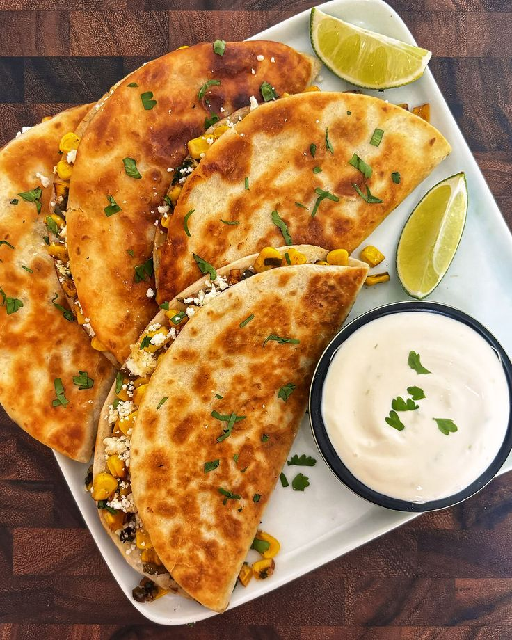
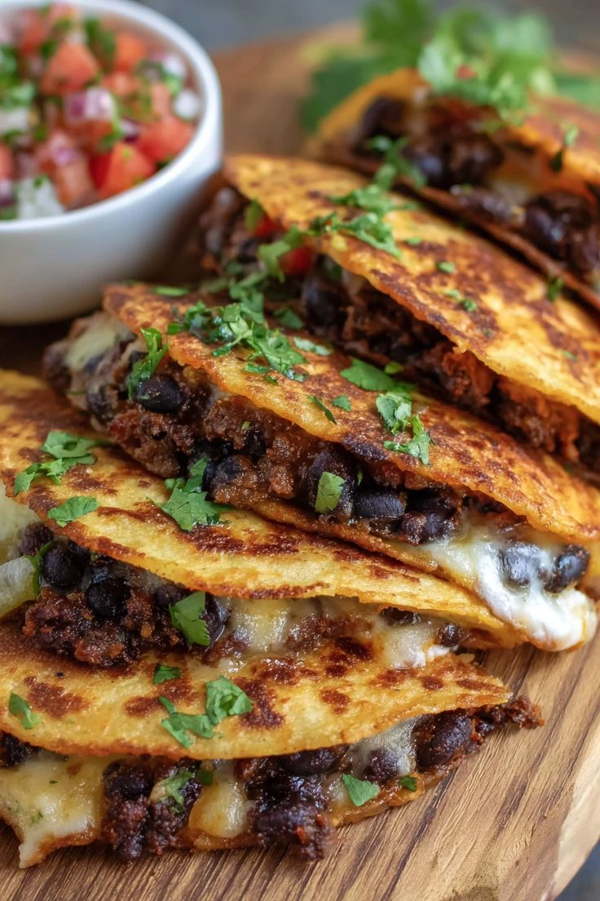
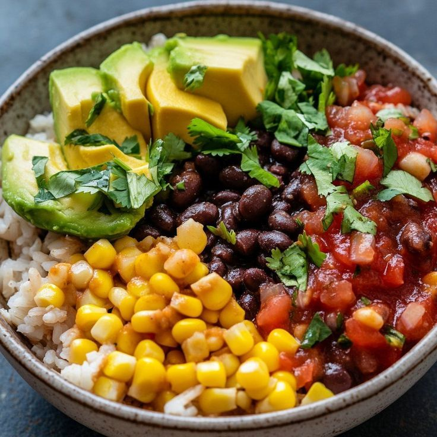
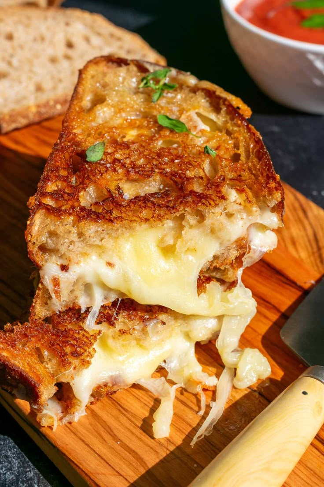
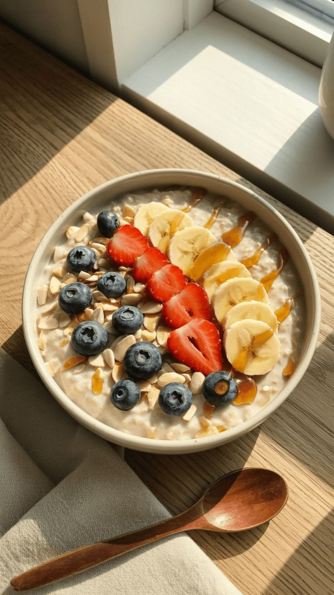
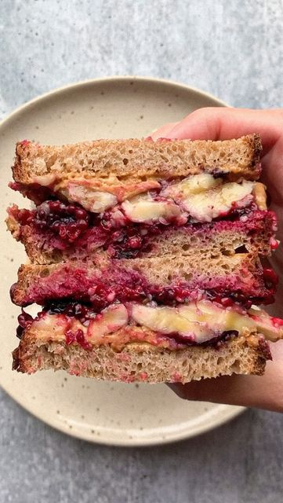

About My Diagnosis
Years ago, I was trying to make my High School Basketball team. I trained hard, waking up every day at 5 am to run and shot before the sun came up. Open gyms I would try to compete, but could never seem to have the stamina to run continuously up and down the basketball court. After failing to make the team, my family decided something must be up. I had tried harder than I have ever tried to do something in my entire life. Things weren't adding up. We decided to make an appointment for a blood panel at my local doctors office. Turns out my iron levels in my blood were at deadly levels. I quickly got an iron transfusion and was put on iron supplements for the rest of my life.
We still didn't know why my iron was so low, but with an endoscopy and colonoscopy scheduled it was only a matter of time. After a few months of waiting, the results game back with diagnosed celiac disease. It was the reason I wasn't able to absorb iron or other micro-nutrients properly for the majority of my life.
Now, I've been on a gluten free diet for the last six years. It wasn't easy at first, but it turns out there's some good reliable gluten free food that I make all the time. This webpage will highlight some of my favorite meals that I go to on the daily.
Things weren't adding up. We decided to make an appointment for a blood panel at my local doctors office. Turns out my iron levels in my blood were at deadly levels. I quickly got an iron transfusion and was put on iron supplements for the rest of my life.
We still didn't know why my iron was so low, but with an endoscopy and colonoscopy scheduled it was only a matter of time. After a few months of waiting, the results game back with diagnosed celiac disease. It was the reason I wasn't able to absorb iron or other micro-nutrients properly for the majority of my life.
Now, I've been on a gluten free diet for the last six years. It wasn't easy at first, but it turns out there's some good reliable gluten free food that I make all the time. This webpage will highlight some of my favorite meals that I go to on the daily.
Food Gallery
Here's my Food Gallery! Just some of my favorite gluten free foods and meals are listed below with their name and a short description. Feel free to explore and see what I have listed.
|

Quesadillas
|

Tacos
|
|

Bean Bowls
|

Grilled Cheese
|
|

Oatmeal
|

PB&Js
|
Contact Me
I'd love to hear from you. What did you think of the foods I had listed here? Do you know someone who has celiac disease or a gluten sensitivity? Let me know, I'd love to hear what you have to say.